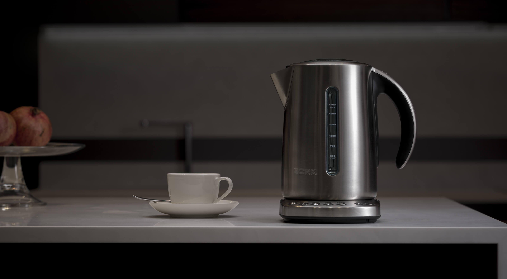
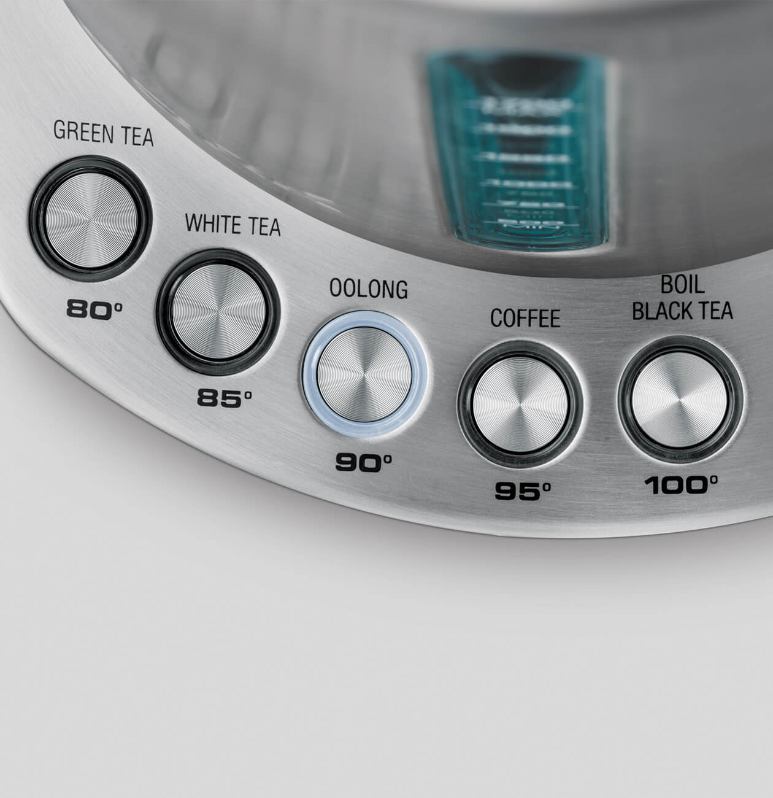
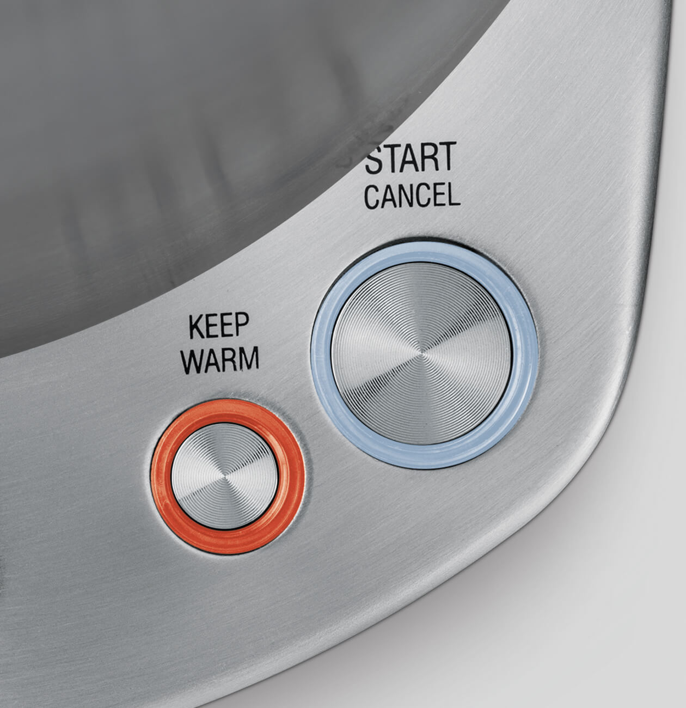
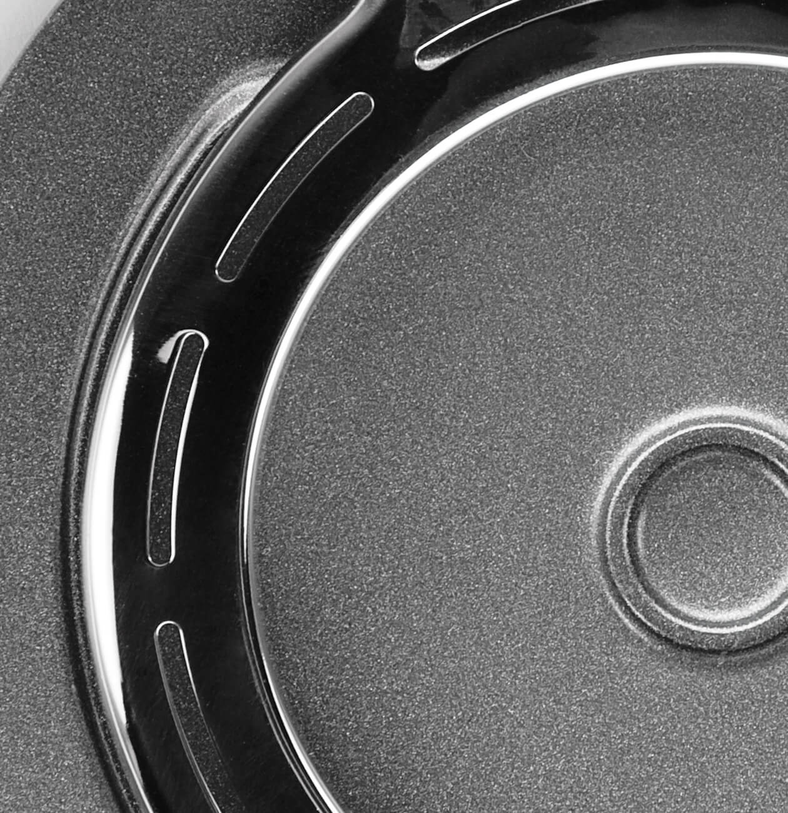
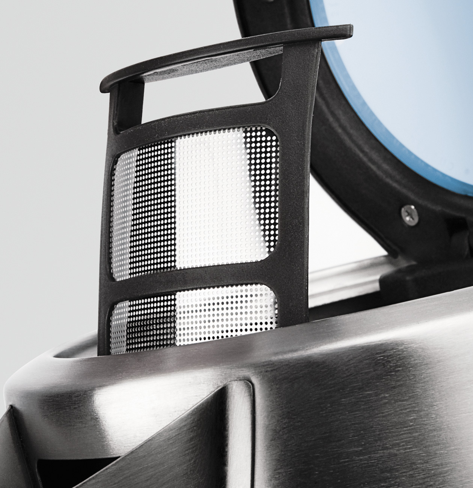
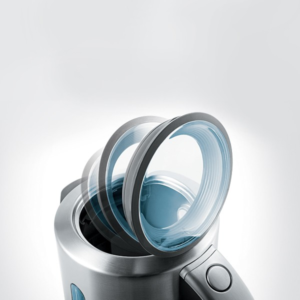
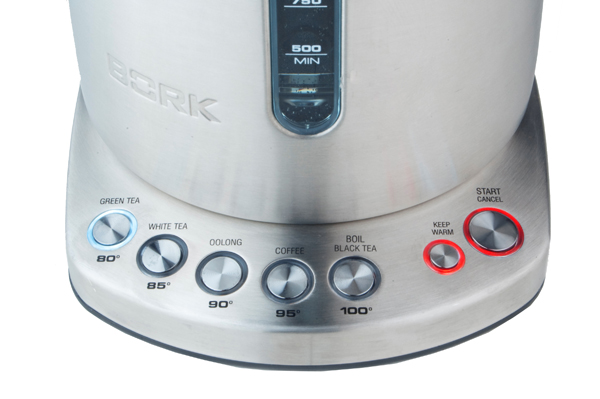

Чайник К800
Пять температурных режимов
Чайник имеет пять температурных режимов, благодаря которым вы можете подобрать оптимальную температуру для заваривания различных видов чая и кофе, тем самым подчеркивая их неповторимый вкус. Выберите необходимую температуру и нажмите кнопку START/CANCEL. При нажатии кнопки START/CANCЕL без предварительного выбора температуры вода будет нагреваться до температуры, которая была выбрана в последний раз.
Преимущества выбора температурных режимов:
- Высококачественный чай хорош настолько, насколько он правильно заварен!
- Позволяет избежать повторного кипячения, которое делает воду «мёртвой» и безвкусной
- Затраты электроэнергии на подогрев воды в разы меньше, чем на её кипячение
Функция поддержания заданной температуры KEEP WARM
Поддержание заданной температуры в течение 20 минут без дополнительного кипячения. Режим поддержания заданной температуры Keep Warm можно включить до, во время или после завершения цикла нагрева воды. Если выбран режим поддержания 100 °С, то после закипания температура воды, будет поддерживаться на уровне 95°С ещё в течении 20 минут. Функция Keep Warm работает в диапазоне 80°С - 95°С.
Технология тихого кипячения STEALTH
В вашем чайнике использована инновационная технология Stealth. Недостатком любого металлического чайника является высокий уровень шума, чайник BORK К800 работает тише, благодаря кольцевому диффузору. Для профилактики технологии Stealth необходимо регулярно удалять накипь, которая может влиять на работу и срок службы чайника.
Съемный металлический фильтр
Съемный металлический фильтр от накипи отличается прочностью и долговечностью. Мелкоячеистая структура сетки обеспечивает эффективную фильтрацию воды.
Технология плавного открывания крышки
При нажатии кнопки механизм открывания крышки срабатывает мягко и плавно, исключая разбрызгивание воды из чайника. Данное решение позволяет избежать ожогов паром при открывании крышки чайника. Большой диаметр крышки позволяет удобно заливать воду и при желании промыть чайник.
Звуковая и световая индикация
Чайник подаёт звуковые сигналы при: Подключении вилки к сети питания, выборе температуры, включении/выключении, при достижении заданной температуры (3 звуковых сигнала), при снятии чайника с подставки.
Световая индикация: Клавиш выбора температуры (голубая), кнопки поддержания заданной температуры (красная), клавиши включения/выключения (голубая/красная), автоматическое включение подсветки клавиш при установки чайника на основание, при достижении заданной температуры кнопка температуры подсвечивается в течение 1 минуты.
Лёгкое и безопасное наливание
Идеальный угол наклона носика обеспечивает равномерную подачу воды, не образуя подтёков по корпусу и избегая пролива мимо чашки.
Контактная группа STRIX

Strix уже давно зарекомендовал себя на рынке - основные преимущества заключаются в следующем:
Полный набор защитных механизмов, которые обеспечивают максимальную безопасность при использовании чайников. Есть и отключение при перегреве нагревательного элемента, и защита скачков напряжения, а также - отключение, если чайник снимается до закипания.
Конструкция контактных групп позволяет реализовать вращение чайника на подставке на 360 градусов, чтобы и правша, и левша мог использовать чайник с одинаковым удобством.
Контактная группа Strix, рассчитана на 3 000 000 закипаний воды в чайнике, что положительно сказывается на сроке службы.
Максимальная погрешность температур ± 3 ˚ С, такая точность позволяет полностью раскрыть аромат и вкус, каждого из завариваемого чая.
Технические характеристики
Напряжение: 230–240В
Частота: 50 Гц
Мощность: 2200–2400 Вт
Габариты (В×Ш×Г): 250×230×180 мм
Вес: 1,55 кг
Объем: 500 min - 1,7 max
Сделано в Китае